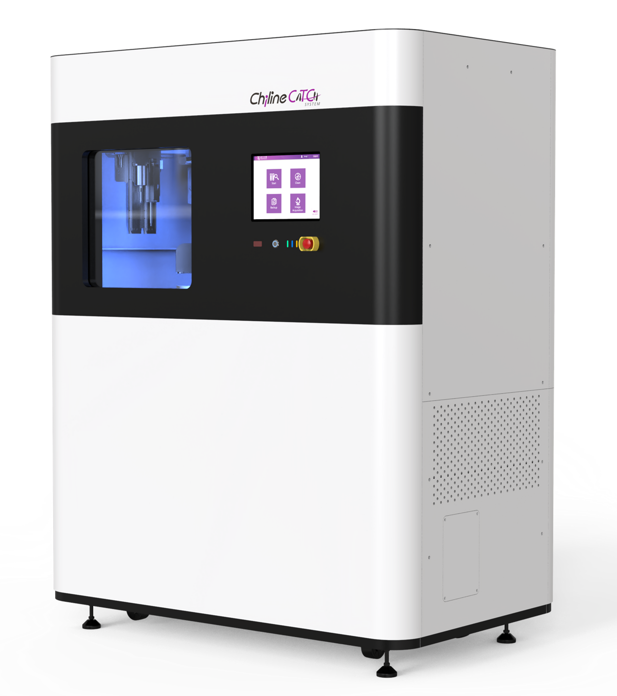
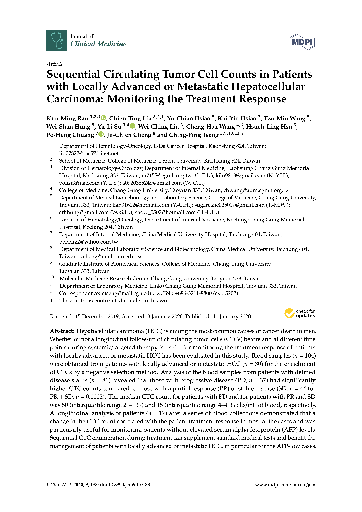
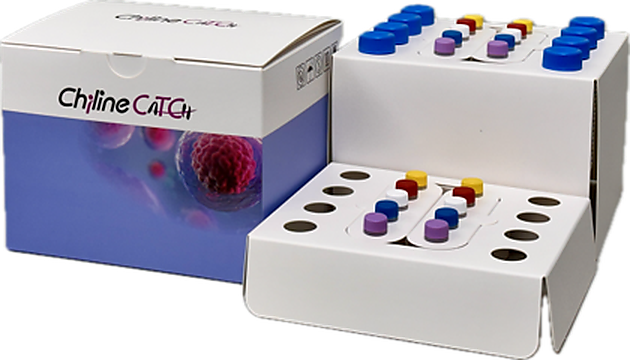

產品類型
全自動富集系統及試劑耗材套組
Chiline CATCH® 循環腫瘤細胞富集系統整合血液檢體處理、CTC 分離與染色、影像分析及報告產出流程，協助實驗室以全自動化、標準化方式完成 CTC 檢測。

從全血檢體收集、樣本處理、免疫螢光染色到影像分析與報告產出，建立一致且標準化的 CTC 檢測流程。

Chiline CATCH® 循環腫瘤細胞富集系統承接負向篩選、免疫螢光染色與影像分析流程，相關研究已應用於乳癌、大腸直腸癌與肝癌等 CTC 評估情境。

Diagnostic and Prognostic Utility of Cell-Surface Vimentin Positive Circulating Tumor Cells in Breast Cancer Using an Automated Negative Selection Platform

Circulating tumor cell enumeration for improved screening and disease detection of patients with colorectal cancer

Sequential Circulating Tumor Cell Counts in Patients with Locally Advanced or Metastatic Hepatocellular Carcinoma: Monitoring the Treatment Response
| 試劑套組名稱 | 型號 |
|---|---|
| Chiline CATCH Circulating Target Cell Enrichment System | IM2 |
| Chiline CATCH Circulating Target Cell Enrichment Kit (Epithelial) | CEK02 |
| Chiline CATCH Circulating Target Cell Enrichment Kit (Mesenchymal) | MES01 |
| Chiline CATCH Circulating Target Cell Enrichment Control Test Kit | CEC01 |
| Chiline CATCH Circulating Target Cell Consumable Kit | CCK01 |

適用於搭配 Chiline CATCH® 自動化系統，建立標準化、高一致性的 CTC 檢測流程。